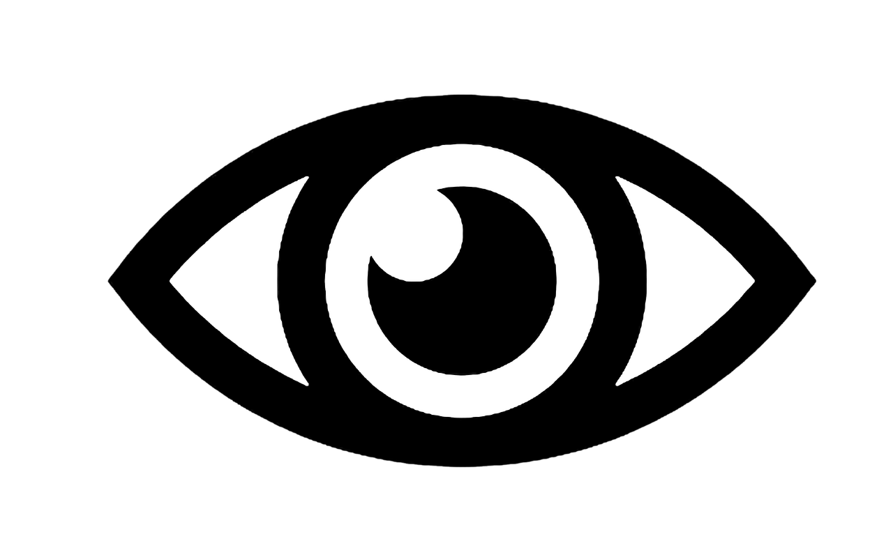
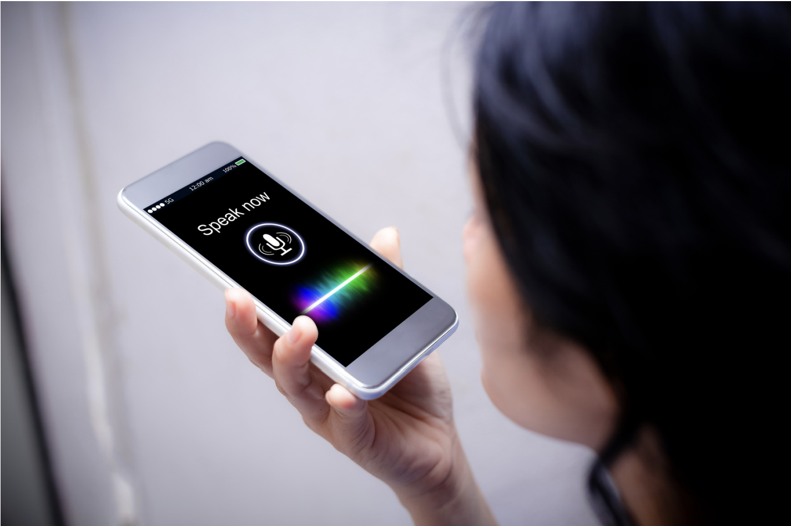

"I Don't See Color"
What does that look like?
Normal Vision:
Uses all three types of cone
cells which are functioning
correctly. Also called
trichromacy.
Deuteranopia:
Reduced sensitivity to
green light.
(the most common form
of color blindness)
Protanopia:
Reduced sensitivity to
red light.
Tritanopia :
Reduced sensitivity to
blue light.
(The least common form
of color blindness)

Soap dispensers and self-driving cars
literally being unable to see darker skin tones.


Voice recognition software not being